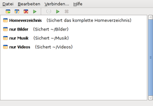
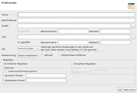
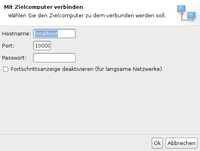

FullSync
Dieser Artikel wurde für die folgenden Ubuntu-Versionen getestet:
Ubuntu 16.04 Xenial Xerus
Ubuntu 14.04 Trusty Tahr
Zum Verständnis dieses Artikels sind folgende Seiten hilfreich:
FullSync  ist eine von mehreren Möglichkeiten, Dateien zwischen zwei Rechnern zu synchronisieren. Es unterstützt Netzlaufwerke (FTP, SFTP, SMB) und kann dank Java unter verschiedenen Betriebssystemen genutzt werden.
ist eine von mehreren Möglichkeiten, Dateien zwischen zwei Rechnern zu synchronisieren. Es unterstützt Netzlaufwerke (FTP, SFTP, SMB) und kann dank Java unter verschiedenen Betriebssystemen genutzt werden.
Da es sich um eine Anwendung aus dem Jahr 2005 handelt, sind zwischenzeitlich alternative Programme entstanden, die am Ende des Artikels zu finden sind.
Voraussetzungen¶
 Wie man eine Java-Laufzeitumgebung (JRE) installiert, ist im Artikel Java/Installation beschrieben. Bei Problemen mit dem OpenJDK empfiehlt sich die Verwendung von Oracle Java. Allerdings sind keine Probleme mit dem OpenJDK bekannt.
Wie man eine Java-Laufzeitumgebung (JRE) installiert, ist im Artikel Java/Installation beschrieben. Bei Problemen mit dem OpenJDK empfiehlt sich die Verwendung von Oracle Java. Allerdings sind keine Probleme mit dem OpenJDK bekannt.
Installation¶
 FullSync ist nicht in den offiziellen Paketquellen vorhanden, sondern muss manuell installiert werden.
FullSync ist nicht in den offiziellen Paketquellen vorhanden, sondern muss manuell installiert werden.
Manuell¶
Zuerst lädt man den grafischen Installationsassistenten FullSyncInstaller.jar  herunter und startet diesen mit dem Befehl [1]:
herunter und startet diesen mit dem Befehl [1]:
java -jar FullSyncInstaller.jar
Dann braucht man nur noch das Verzeichnis angeben, in dem das Programm installiert werden soll. Wer eine systemweite Installation (z.B. im Ordner /opt) vornehmen möchte, startet den Assistenten mit Root-Rechten [2]:
sudo java -jar FullSyncInstaller.jar
Da der Installationsassistent unter Linux nicht in der Lage ist, einen Eintrag im Anwendungsmenü zu erstellen sowie den korrekten Pfad zur Java-Installation zu erkennen, scheitert der spätere Programmstart mit der Fehlermeldung:
"Error: JAVA_HOME is not defined correctly. We cannot execute java"
Um diesen Fehler zu beheben, editiert [3] man die Datei FullSync-ORDNER/bin/fullsync.sh und fügt folgende Zeile direkt unterhalb der ersten Zeile mit dem Shebang #! /bin/sh ein:
#! /bin/sh JAVA_HOME=/PFAD/ZUR/JAVA-INSTALLATION
Beispiel:
#! /bin/sh JAVA_HOME=/usr/lib/jvm/java-1.6.0-sun-1.6.0.33/jre
Bei der Frage, wo sich (bei welcher Java-Variante) JAVA_HOME auf dem eigenen System befindet, hilft das französische Ubuntu-Wiki weiter.
Wie bereits oben erwähnt, dient die Datei FullSync-ORDNER/bin/fullsync.sh zum Programmstart. Wer stattdessen einen Programmstarter [4] bevorzugt, erstellt sich die Datei ~/.local/share/applications/fullsync.desktop. Der Inhalt dieser Datei (die Pfade für den Startbefehl und das Programmsymbol müssen noch angepasst werden):
[Desktop Entry] Name=FullSync Comment=File tool for synchronization Comment[de]=Dateien synchronisieren Exec=FullSync-ORDNER/bin/fullsync.sh Icon=FullSync-ORDNER/images/FullSync_Icon.png Terminal=false Type=Application Categories=Utility;FileManager;FileTools;System; StartupNotify=false
Verwendung¶
|  |
| Hauptfenster mit Profilen |
Starten und Beenden¶
Nach dem Programmstart agiert FullSync als Symbol im Benachrichtigungsfeld. Unter Unity führt das zu einem Problem, das sich aber durch einen kleinen Eingriff lösen lässt.
Da die übliche Methode zum Beenden – das Schließen des Programmfensters – bei FullSync nicht greift, führt man einen Rechtsklick  auf das Panel-Symbol aus und wählt den Punkt "Beenden".
auf das Panel-Symbol aus und wählt den Punkt "Beenden".
Sprache¶
Die verwendete Programmsprache kann über "Bearbeiten -> Einstellungen" (bzw. "Edit -> Preferences") oder mit der Tastenkombination Strg + ⇧ + P ausgewählt werden.
Profile¶
Dreh- und Angelpunkt von FullSync sind die Profile, mit denen definiert wird, welche Ordner und Dateien berücksichtigt werden sollen. Neben diesen Angaben kann weiterhin der Typ der Synchronisation, eine Wiederholung und bei Bedarf ein Regelsatz festgelegt werden. Damit sind auch komplexere Angaben zum Abgleich von Dateien möglich.
|  |
| Profilerstellung |
Vier Backuptypen sind möglich:
"Publish/Update" - überträgt sämtliche Änderungen im Quellordner auf das Ziel. Dabei werden neue Dateien im Ziel ignoriert, aber Änderungen beachtet, also nicht sofort überschrieben.
"Backup Copy" - überträgt außer Löschungen sämtliche Änderungen im Quellordner auf das Ziel
"Exact Copy" überträgt sämtliche Änderungen im Quellordner auf das Ziel und erzeugt somit eine exakte Kopie
"Two Way Sync" - synchronisiert zwei Ordner, wobei neuere Dateien im anderen Ordner aktualisiert werden
Als Wiederholung stehen "Intervall" und "Crontab" zur Verfügung. Während bei ersterem das Intervall in Sekunden, Minuten oder Stunden angegeben werden kann, wird in zweitem Fall die benutzereigene Crontab verwendet.
Über Regelsätze kann detailliert definiert werden, welche Dateien in eine Sicherung einbezogen werden sollen. Für Details sei auf die interne (englische) Hilfe verwiesen, die nicht über F1 , sondern manuell über FullSync-ORDNER/docs/manual/index.html im Browser geöffnet werden muss.
|  |
| Mit Zielcomputer verbinden |
Profildaten werden in der Datei profiles.xml im FullSync-Installationsordner gespeichert.
Entfernte Sicherung¶
Über "Verbinden... -> Mit einer laufenden Instanz verbinden..." ist es möglich, eine auf einem anderen Rechner gestartete Programminstanz anzusprechen. In der Voreinstellung wird der Port 10000 verwendet, der nicht durch eine Firewall blockiert sein darf.
Einstellungen¶
Die über die Oberfläche via "Bearbeiten -> Einstellungen" vorgenommenen Einstellungen werden im FullSync-Installationsordner als preferences.properties gespeichert.
Deinstallation¶
Zwar wird auch ein Deinstallationsprogramm FullSync-ORDNER/Uninstaller/uninstaller.jar angeboten, unter Linux reicht es aber aus, den Installationsordner und einen eventuellen Menü-Eintrag zu löschen.
Links¶
Manual
- Handbuch
fullsync - Anleitung im französischen Ubuntu-Wiki
Set JAVA_HOME in FullSync
- ubuntuforums.orgAlternative Programme:
- Erstellt mit Inyoka
-
 2004 – 2017 ubuntuusers.de • Einige Rechte vorbehalten
2004 – 2017 ubuntuusers.de • Einige Rechte vorbehalten
Lizenz • Kontakt • Datenschutz • Impressum • Serverstatus -
Serverhousing gespendet von